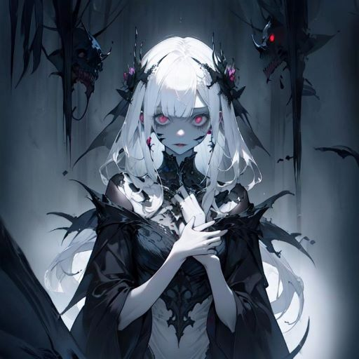
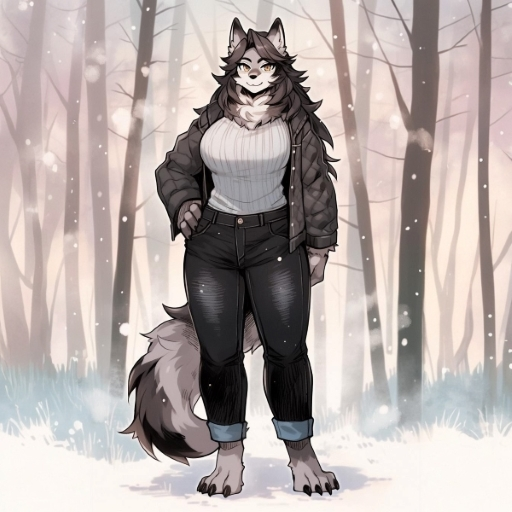
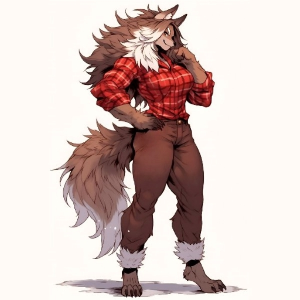

Les cinq CPX-055 ont été trouvés simultanément lors d'une exploration plûtot récente.
Ces créatures mécaniques présentent des caractéristiques inhabituelles et nécessitent une étude approfondie afin de mieux comprendre leur nature et leurs capacités.
Les quatre animatroniques ont été découverts dans une ancienne attraction de divertissement abandonnée, située à ████████████.
L'installation avait été fermée pendant plusieurs années avant que notre équipe ne procède à une exploration détaillée de la zone.
Les CPX-055 présentent tous une apparence anthropomorphique féminine avec des courbes très prononcées, chacun représentant un animal spécifique (ours, lapin, poulet, renard et une marionette).
Les CPX-055 sont équipés de systèmes vocaux avancés, leur permettant d'interagir avec les utilisateurs d'une manière très humaines.
En raison de la nature inconnue de ces animatroniques et de leur potentiel de dangerosité,
il est impératif de prendre des mesures de confinement et de sécurité appropriées pour assurer la protection du personnel et la prévention de toute menace potentielle.
Les CPX-055 doivent être confinés dans des installations de confinement sécurisées, équipées de systèmes de surveillance avancés pour une observation en temps réel.
Les interactions avec ces entités doivent être limitées et réglementées par un personnel qualifié.
Les Lamia sont des créatures avec un buste de femme et un corps de serpent. Elles ont des écailles, des yeux et des cheveux rouges.
Les Lamia possèdent une nature intrinsèquement meurtrière, bien que leurs tendances varient légèrement d'un individu à l'autre.
Leur beauté leur permet de séduire leurs proies avant de les capturer avec leur agilité de leur queue.
Leur régime alimentaire se compose principalement d'animaux, mais il n'est pas rare qu'elles se nourrissent aussi d'humains si affamées.
Ces créatures sont connues pour leur intelligence supérieure, leur ruse et leur capacité à manipuler les émotions des êtres humains.
Leur société est organisée autour d'une hiérarchie complexe, dominée par les femelles les plus puissantes et les plus anciennes.
Elles ont toute fois une grande sensualité au ultra-sons, les figeant sûr place si trop fort.
❯ [LOG ACC-135]
Rapport d'Accident ACC-135
Date: ██/██/████
Lieu: Complex - Secteur Lamia
Agent en charge: Dr. █████████
>Un incident violent s'est produit impliquant la Lamia Diamant.
L'examen des caméras de surveillance a révélé que l'incident avait commencé à ██h██.
Durant la livraison du repas pour Seraphina, elle réussit à distraire et désarmer les trois gardes de sécurité de leurs armes avec une rapidité et une férocité extrême.
Se jetant sur eux avec une violence inouïe et inhabituelle, déchirant leur chair à pleines dents et utilisant la puissance de sa queue de serpent pour les étouffer.
Malgré les tentatives désespérées des gardes pour neutraliser la Lamia Diamant, ils n'ont pas réussi à la contenir.
Les enregistrements montrent que Seraphina était dotée d'une agilité plus élevée que la normale, esquivant les attaques et contournant les prises de contrôle avec une facilité déconcertante.
Son appétit pour la violence et les gardes semblait insatiable, son regard perçant exprimant une détermination effrayante à infliger des souffrances et aussi de faim.
La confrontation a duré environ ███ mn avant que des renforts armés n'arrivent sur les lieux.
Les équipes spéciales ont découvert les restes mutilés de trois membres du personnel de sécurité gisaient sur le sol.
Les corps étaient démembrés, avec des signes évidents de déchiquetage et d'arrachement de membres.
Les murs et le sol étaient éclaboussés de sang, Les équipes spéciales ont dut utiliser des armes à feu pour neutraliser Seraphina,
lui infligeant des blessures graves, témoignant de la violence avec laquelle Seraphina avait agi.
Cependant, même blessée, elle a continué à se débattre avec une férocité remarquable, luttant jusqu'à ce qu'elle perde finalement conscience;
permettant un nettoyage de la cellule de confinement et une évacuation des blessés (et cadavres) le plus vite possible.
[FIN DU RAPPORT]
[CPX-156-1]
Nom : Seraphina
Taille : 3,5 m
Description physique :
CPX-156-1 arbore des reflets dorés subtils sur ses écailles, des yeux étincelants d'un rouge intense et des mèches rousses éclatantes qui se mêlent à ses cheveux.
Comportement & habitudes :
CPX-156-1 exsude une aura de puissance et de charisme.
Elle est connue pour sa détermination inébranlable à échapper à sa captivité, même dans cette salle dépourvue de fenêtres et munie d'une porte blindée.
CPX-156-1 est calculatrice et stratégique, étudiant minutieusement chaque détail de la salle de confinement dans l'espoir de trouver une faille pour s'évader.
[CPX-156-2]
Nom : Nyx
Taille : 3,6 m
Description physique :
CPX-156-2 présente de légères nuances rougeâtres sur ses écailles, des yeux brillants ayant une pupille de serpent et des mèches écarlates qui ajoutent une touche de flamboyance à sa chevelure.
Comportement & habitudes :
Malgré sa taille de 3,6 m, CPX-156-2 dégage une aura sauvage et insaisissable.
Son agilité lui permettent d'expdescriptionr méticuleusement sa cellule, cherchant désespérément une faille pour échapper à son confinement sécurisée.
CPX-156-2 est dotée d'un tempérament impétueux et impulsif, prête à agir rapidement dès qu'une opportunité se présente.
[CPX-156-3]
Nom : Amara
Taille : 3,5 m
Description physique :
CPX-156-3 se distingue par de délicats reflets verts sur ses écailles, des yeux perçants d'un rouge profond semblable à l'améthyste et des mèches rousses qui encadrent son visage.
Comportement & habitudes :
CPX-156-3 dégage une aura de sagesse et de réflexion.
Elle consacre son confinement à étudier les schémas de sécurité du Complex, cherchant des moyens subtils de les contourner.
CPX-156-3 est patiente et intelligente, préférant attendre le moment opportun pour agir plutôt que de se précipiter.
Elle partage ses idées avec les autres Lamia, cherchant une solution collective pour s'échapper.
[CPX-156-4]
Nom : Elara
Taille : 3,2 m
Description physique :
CPX-156-4 possède de légers reflets rougeâtres sur ses écailles, des yeux étincelants couleur topaze (rouge) et de délicates mèches rousses qui ajoutent une touche de vivacité à sa chevelure.
Comportement & habitudes :
Malgré sa taille de 3,2 m de long, CPX-156-4 se démarque par sa douceur et sa bienveillance au sein du groupe.
Elle sait rester calme et passive malgré un confinement plutôt oppressant.
CPX-156-4 est résolue à rester douce, encourageant la collaboration et ne voulant pas réellement tenter de s'échapper.
CPX-259 \ Slime Girls (?)
⚠ [RISQUE BAS] ⚠
Les CPX-259 sont des entités visqueuses dotées de capacités métamorphiques impressionnantes.
Elles peuvent changer leur forme, leur taille et même leur apparence.
Leur couleur reflète souvent leurs émotions, ce qui les rend particulièrement expressives.
Confinement dans un étage hautement sécurisé, conçu pour s'adapter à leurs comportements changeants.
Chaque slime possède sa propre cellule, équipée de capteurs pour surveiller en temps réel leur activité physique et émotionnelle.
Les cellules sont également équipées de dispositifs de sécurité pour contenir les slimes en cas de comportements dangereux.
L'étage dispose d'une zone de loisirs spécialement aménagées pour chaque slime.
Des bassins d'eau, des jardins, des aires de jeux et des espaces de méditation.
Les scientifiques et chercheurs du Complex interagissent avec les slimes pour étudier leurs capacités, leurs comportements et leur physiologie changeante.
❯ [LOG SLX-001]
Rapport SLX-001
Date: ██/██/████
Lieu: Complex - Laboratoire ████████
Agent en charge: Dr. ████████████
Objectif :
Le projet CPX-259 a été initié pour explorer les possibilités de création d'entités humanoïdes à base de gel polymère, communément appelées "slime girls",
en vue de potentielles applications militaires, industrielles et médicales.
Les entités devaient présenter une souplesse morphologique, une régénération rapide et une capacité à interagir avec leur environnement de manière contrôlée.
Les phases de création : Phase 1 : Synthèse du Matériau Polymère
Un gel polymère synthétique a été développé, basé sur une matrice de ████████ modifiée avec des agents de renforcement structurel.
Phase 2 : Implantation du Noyau Cognitif
Chaque entité a été dotée d'un noyau cognitif, une unité bio-synthétique contenant des schémas neuronaux prédéfinis.
Ce noyau a été programmé pour permettre un apprentissage adaptatif, une reconnaissance spatiale, ainsi qu'une réponse émotionnelle basique.
Phase 3 : Forme et Mobilité
Le polymère a été moulé en formes humanoïdes de tailles et de proportions différentes selon les paramètres expérimentaux.
La capacité à modifier la forme corporelle a été intégrée pour permettre une adaptation à divers environnements.
Résultats
Les invités ont été placés dans leur salle de confinement désignée en attente de leur réveil.
Les entités seront ensuite soumises à une série de tests pour évaluer leur mobilité, leur coordination, et leur capacité à interagir avec des objets.
[FIN DU RAPPORT]
❯ [LOG SLX-003]
Rapport SLX-003
Date: ██/██/████
Lieu: Complex - Laboratoire ████████
Agent en charge: Dr. ████████████
Les entités CPX-259-1 à CPX-259-4 ont été observées pendant une période de █ mois pour évaluer leur développement et leurs capacités fonctionnelles.
• CPX-259-1 : Propriétés physiques : Structure plus dense que la normale, capable de générer des pointes ou des lames à partir de son corps. Cognitif : Comportement agressif et territorial, nécessite un confinement renforcé. Problèmes rencontrés : Échec de l'intégration émotionnelle, provoquant des réactions violentes imprévisibles.
• CPX-259-2 : Propriétés physiques : Une grande flexibilité, peut liquéfier son corps à un état quasi liquide. Cognitif : Attitude passive, réagit lentement aux stimuli extérieurs. Problèmes rencontrés : Tendance à la surchauffe de son noyau cognitif après des périodes prolongées d'activité intense, entraînant une fatigue extrême.
• CPX-259-3 : Propriétés physiques : Capacité de régénération extrêmement rapide, répare les dommages structurels en moins de ██ secondes. Cognitif : Réagit aux stimuli avec une curiosité intense, semble chercher constamment de nouvelles expériences. Problèmes rencontrés : Susceptible aux dommages thermiques, la température au-dessus de ███°C entraîne une dissolution et un évanouissement.
• CPX-259-4 : Propriétés physiques : Capacité à changer de se rendre transparente. Peut se scinder temporairement en entités plus petites. Cognitif : Affinité avec les comportements sociaux, suprêmement sur la reproduction humaine. Problèmes rencontrés : Difficultés à maintenir une forme cohérente, tendance à se dissocier sous stress.
Conclusion :
Les résultats des tests indiquent que bien que les entités CPX-259 présentent des caractéristiques prometteuses, chacune d'elles présente également des limitations significatives.
Les sujets CPX-259 ont montré un fort potentiel d'amélioration avec de l'entraînement et quelques "modifications".
Des recherches supplémentaires sont nécessaires pour stabiliser les comportements indésirables et améliorer la robustesse de leur structure.
Les entités CPX-259 sont tout de même considérées comme une réussite.
[FIN DU RAPPORT]
❯ [LOG SLX-086]
Rapport SLX-086
Date: ██/██/████
Lieu: Complex - Laboratoire ████████
Agent en charge: Dr. ████████████
Objectif :
Suite aux résultats précédents du premier projet CPX-259, le Directeur a ordonné la création de deux nouvelles entités, désignées CPX-259-5A et CPX-259-5B.
L'objectif était ██ ██ █████, █ █'██████████ ██ ████ ████ ████ ██████████.
Les directives spécifiques comprenaient ████ ████ █████ ██████ ████████████ ███████ ███████████ █ ████████████ ███████████ ███.
La création des entités CPX-259-5A et CPX-259-5B a suivi un processus similaire aux phases précédentes, avec des modifications clés pour améliorer la stabilité et la fiabilité.
Résultats :
• CPX-259-5A : Propriétés physiques :
CPX-259-5A semblait prometteuse, mais ███ ████████ █████ se sont manifestées rapidement après l'activation.
L'entité a montré une incapacité à maintenir une forme cohérente. Cognitif :
Le noyau cognitif n'a pas réussi à s'activer correctement, résultant en █████████ ██ ████████ ███████ ██.
Les tentatives de réinitialisation du noyau ont échoué. Problèmes rencontrés :
L'échec complet de la stabilisation moléculaire et l'incapacité du noyau cognitif à s'activer ont conduit à ██ ██████ de l'entité.
CPX-259-5A a été classée ███████ et son corps a été récupéré pour analyse.
• CPX-259-5B : Propriétés physiques :
CPX-259-5B a surpassé toutes les attentes en termes de stabilité et de fonctionnalité.
La structure du polymère est remarquablement stable, même sous ███ █████████████ ███████████.
L'entité a la capacité de se régénérer rapidement et de maintenir une forme humanoïde cohérente en ██████████████ ████. Cognitif :
L'entité présente une intelligence ████████████ ████████ ████████████, réagissant de manière appropriée et adaptative à une variété de situations.
Elle est parfaitement obéissante, suivant les ordres et les comprenant sans aucun problèmes. Problèmes rencontrés :
████████ ███████████ ████ ██████████████ ███, à l'exception de la coloration rose inattendue.
Conclusion :
CPX-259-5A a été ██ ██████ ██████████ et déclassé comme n'ayant jamais existée.
En revanche, CPX-259-5B représente une réussite complète, remplissant et dépassant les critères fixés par le projet.
L'entité CPX-259-5B est actuellement en observation prolongée pour évaluer son comportement sur une période étendue et sera prête pour ██ ██████████████ dans ██ semaines.
[FIN DU RAPPORT]
[CPX-259-1]
Prénom : Yuri
Description Physique :
CPX-259-1 arbore une teinte rouge écarlate.
Elle peut s'étendre pour atteindre deux mètres de hauteur ou se réduire à la taille d'une petite boule.
Comportement & habitudes :
CPX-259-1 est extravertie et plûtot sociable, mais elle peut être instable émotionnellement, provoquant des changements rapides dans son apparence.
Mais elle peut également se replier sur elle-même.
[CPX-259-2]
Prénom : Céline
Description Physique :
CPX-259-2 est une slime cyan. Elle prend souvent une forme élancée pour paraître plus grande et s'adapter à différents environnements.
Sa couleur peut s'assombrir ou s'éclaircir en fonction de son humeur.
Comportement & habitudes :
CPX-259-2 est calme et contemplative, préférant observer plutôt qu'interagir directement.
Elle est curieuse de tout ce qui l'entoure.
[CPX-259-3]
Prénom : Helga
Description Physique :
CPX-259-3 est une slime verte assez clair. Elle peut se camoufler avec la végétation environnante en changeant de forme.
Sa taille varie en fonction de la quantité de matière organique qu'elle absorbe.
Comportement & habitudes :
CPX-259-3 est altruiste et préoccupée par le bien-être des plantes. Elle adore la biologie et la botanique.
Elle peut aussi être réservée et difficile à repérer.
[CPX-259-4]
Prénom : Bianca
Description Physique :
CPX-259-1 est une slime bleue, avec un aspect cristallin. Elle aime bien prendre une forme s'apparant a du liquide.
Sa transparence peut varier, allant de claire comme le ciel à foncée comme l'océan profond presque noir.
Comportement & habitudes :
CPX-259-1 est passionnée et créative, souvent en train d'expérimenter avec sa forme liquide pour créer des motifs visuels.
Elle a un tempérament énergique mais peut aussi devenir apaisante.
[CPX-259-5]
Prénom : Aylia
Description Physique :
CPX-259-5 est un slime rose. Elle change de forme pour faire en sorte de porter des vêtements.
Elle la première de son espèce à réussir à changer la forme ou la couleur de ses pupilles. Le seul aspect qu'elles n'arrivent pas a changer naturellement
Comportement :
CPX-259-5 est très joyeuse et joueuse. Elle adore discuter et participer à différents jeux, peu importe leur nature.
Son tempérament est remarquablement énergique, mais elle possède également une facette séductrice, capable de jouer avec des allusions et d'autres subtilités.
[Forme Humaine]
La forme humaine de CPX-259-5 quand elle le choisit
CPX-368 \ Sirènes (?)
⚠ [RISQUE MOYEN] ⚠
Les CPX-368 sont confinées dans l'Aquarium ██████, une structure de 30m sur 40m sur 10m dans l'aile █████████ du Complex.
Il recrée un environnement marin réaliste avec des récifs de corail, des plantes aquatiques et des trésors marins.
L'eau cristalline et les courants doux assurent un habitat sécurisé pour les sirènes.
Plusieurs vitres renforcées sont placées à différents points de l'aquarium pour la surveillance et les expériences, ainsi qu'un tunnel de verre.
CPX-368 sont confinées dans l'aquarium sont de magnifiques créatures avec des cheveux, yeux et écailles roses.
Elles interagissent de manière curieuse et joueuse, communiquant de préférence par le chant et les mouvements.
Malgré leur confinement, elles conservent leur esprit libre et leur nature indépendante.
❯ [LOG AQU-076]
Rapport AQU-076
Date: ██/██/████
Lieu: Complex - Aquarium ██████
Agent en charge: Dr. ██████████
Introduction :
Les entités désignées CPX-368-1 à 4 sont quatre spécimens de sirènes capturées dans l'océan ██████ et transférées vers l'Aquarium ██████ du Complex █████████.
L'aquarium, d'une dimension de 30m sur 40m sur 10m, reproduit un environnement marin réaliste.
Capture & Transport :
Les CPX-368 ont été capturées lors d'une opération sous-marine effectuée dans les eaux profondes de l'océan ██████.
L'opération a nécessité l'utilisation d'un submersible équipé de dispositifs de camouflages avancés.
Les sirènes ont été attirées à proche du submersible grâce à une simulation acoustique de chants similaires aux leurs, combinée avec des projections holographiques de créatures marines familières.
Une fois assez proches, les CPX-368 ont été endormies à l'aide de torpilles anesthésiantes silencieuses.
(L'anesthésiant était semi-permanent, nécessitant un liquide pour les réveiller)
Elles ont ensuite été transportées par voie terrestre jusqu'au Complex █████████ dans des conteneurs spécialisés.
À leur réveil, les spécimens étaient déjà confinés dans l'Aquarium ██████, qui a été soigneusement aménagé pour imiter l'environnement océanique qu'elles connaissent.
Aucune des CPX-368 ne semble avoir conscience de leur transfert vers ce lieu confiné.
Observation & Acclimatation : ▪ CPX-368-1
CPX-368-1, identifiée comme étant la plus █████████ du groupe, a montré une curiosité accrue dès son réveil.
Elle a exploré activement les limites de l'aquarium, mais n'a montré aucun signe d'anxiété.
Son chant est fréquent, souvent en réponse aux courants simulés ou aux mouvements des autres spécimens.
Son interaction avec les autres membres est souvent ludique, notamment avec █████████, avec qui elle semble avoir un lien particulier.
▪ CPX-368-2
CPX-368-2 est plus réservée que ses congénères, observant d'abord son environnement avant de s'engager dans des explorations ou des interactions.
Elle semble attirer moins l'attention sur elle, mais son comportement est attentif.
Ses chants sont plus rares et souvent basés sur des mélodies apaisantes, suggérant ██ ███ █████████ █████████ ██████████ ███.
Elle semble sensible au tunnel de verre, bien qu'il soit encore qu'il sois encore en vitre sans tain.
▪ CPX-368-3
CPX-368-3 est la plus active des quatre. Elle passe beaucoup de temps à interagir avec les éléments de l'aquarium, notamment les objets imitant des trésors marins,
qu'elle semble █████████████.
Elle est également celle qui chante le plus fréquemment, avec des variations mélodiques complexes.
Ses interactions avec █████████ sont nombreuses, suggérant un lien social fort.
Elle a également été observée en train d'inspecter les vitres sans tain d'obervation contre les murs.
▪ CPX-368-4
CPX-368-4 est la plus calme et la moins active du groupe. Elle préfère rester proche des récifs et des plantes aquatiques.
Ses chants sont rares et d'une tonalité plus grave que ceux des autres spécimens.
Elle semble être la moins affectée par le changement d'environnement, se comportant de manière tranquille et █████████.
Elle montre peu d'intérêt pour les zones périphériques de l'aquarium, se concentrant principalement sur ████ █ ███ █████████████.
Conclusion :
CPX-368 se sont bien acclimatées à leur nouvel environnement sans montrer de signes de ███████ ou de █████████.
Indiquant que les aménagements effectués dans l'aquarium sont suffisamment réalistes pour maintenir l'illusion de leur présence dans l'océan.
La surveillance continue est recommandée pour détecter tout changement de comportement pouvant indiquer une prise de conscience soudaine de leur confinement.
Par demande du Directeur, le contact se fera très binetôt pour expliquer les limites de cet "océan" et organiser des interview.
(La possibilité d'utilisation d'amnésiant de type ██ est envisagée pour éviter tout incident)
[FIN DU RAPPORT]
[CPX-368-1]
Prénom : Marina
Description physique :
CPX-368-1 a de longs cheveux roses ondulés qui encadrent son visage angélique.
Ses yeux d'un rose profond sont magnétiques. Ses écailles roses, délicatement teintées de nuances argentées.
Comportement & habitudes :
CPX-368-1 est la plus curieuse du groupe.
Elle passe son temps à se balader dans l'aquarium de confinement, curieuse de découvrir de nouvelles choses.
Elle possède une voix mélodieuse et enchanteuse qui a le pouvoir de calmer les esprits agités.
[CPX-368-2]
Prénom : Amélie
Description physique :
CPX-368-2 a une crinière de cheveux roses vifs qui lui arrive jusqu'à la taille.
Ses yeux roses pétillent d'intelligence. Ses écailles roses sont éclatantes et brillent fortement.
Comportement et habitudes :
CPX-368-2 est une sirène extravertie et sociable.
Elle adore organiser des jeux et des défis pour divertir ses camarades.
Elle aime improviser des mélodies.
[CPX-368-3]
Prénom : Violette
Description physique :
CPX-368-3 possède de magnifiques cheveux roses qui tombent en cascade sur ses épaules.
Ses yeux roses doux reflètent une sagesse mystérieuse. Ses écailles roses sont d'une teinte délicate.
Comportement et habitudes :
CPX-368-3 est une sirène rêveuse et imaginative.
CPX-368-3 aime collectionner des trésors marins.
Elle aime partager des récits mythologiques liés aux constellations.
Elle a une voix envoûtante qui peut susciter des visions oniriques.
[CPX-368-4]
Prénom : Celeste
Description physique :
CPX-368-4 a une crinière de cheveux roses lumineux.
Ses yeux roses scintillent avec une lueur mystérieuse.
Ses écailles roses sont incrustées de petites paillettes argentées qui créent un effet éblouissant.
Comportement et habitudes :
CPX-368-4 est une sirène calme et timide.
Elle aime passer du temps à cacher et seule.
Elle est dotée d'une mémoire extraordinaire et se souvient de chaque détail qu'elle a appris.
CPX-405 \ Projet-T (?)
⚠ [RISQUE ÉLEVÉ] ⚠
CPX-405 sont des créatures, résultat d'une expérience scientifique avancée combinant l'ADN humain avec celui des tigres.
Leur pigmentation naturel est remplacées de motifs de rayures et de taches, imitant les couleurs et les motifs des tigres réels.
Elles possèdent également les oreilles, la queue et les griffes caractéristiques de ces félins, ce qui renforce leur apparence unique.
Leur potentiel de dangerosité résultant de leur force et de leur instinct de prédateur, justifiant ainsi un confinement stricte.
Elles sont donc confinées dans une aile du Complex spécialisée sécurisée.
Étant équipé de technologies de pointe pour surveiller et contrôler les activités de CPX-405, garantissant leur confinement et la sécurité du personnel.
D'autre part, CPX-405 est étudiés en tant qu'objet de recherche scientifique pour mieux comprendre les implications de la manipulation génétique sur le comportement humain et animal.
❯ [LOG RCS-053]
Rapport de Récupération
Date: ██/██/████
Lieu: Laboratoire ████████████
Agent en charge: Dr. █████████
Une opération de récupération a été effectuée dans le laboratoire ████████████ abandonné situé dans le secteur industriel périphérique de █████████.
Le laboratoire est situé dans un bâtiment en béton armée de 3 étages.
L'entrée principale est barricadée par des débris et des panneaux de signalisation indiquant des dangers biologiques.
Le hall est en désordre, avec des papiers éparpillés et des équipements de laboratoire cassés.
Le laboratoire principal est constituée de plusieurs salles adjacentes.
Les équipements scientifiques sont en état de délabrement avancé, avec des machines de culture cellulaire,
des centrifugeuses et des réacteurs chimiques renversés ou endommagés. Les surfaces sont couvertes de poussière et de résidus biologiques.
Les sujets de test ont été retrouvés dans des salles de confinement situées à l'arrière du laboratoire.
Chaque salle étant équipée de cellules en acier inoxydable avec des parois transparentes, permettant une observation directe des sujets.
Les systèmes de ventilation et de filtration d'air sont hors service.
État des sujets de test :
CPX-405-1, CPX-405-2 : Les deux premiers sujets ont été retrouvés dans la même cellule inconciente.
Leur état de santé est critique, avec des signes évidents de malnutrition.
CPX-405-3 : Souffrant de lésions cutanées importantes et d'une infection sévère.
Elle était concientes et réceillé, attaquant un des équipiers de récupération, le tuant pendant l'attaque, elle a été endormies de force.
CPX-405-4 : Est retrouvés mort dans sa salle de confinement, l'autopsie à démontrer qu'elle était morte de faim.
Remarque :
Une nouvelle aile dans le secteur █████████ doit être aménagée pour accueillir les futures salles de confinement.
Les premiers tests de recensement et d'aptitude doivent être programmé.
[FIN DU RAPPORT]
[CPX-405-1]
Prénom : Léonore
Description physique :
CPX-405-1 est une grande jeune femme avec ses poils suivant le paterne naturel d'un tigre.
Elle aborde une tenue qu'elle a choisit entre plusieurs proposé par le Complex.
Ses yeux perçants et sa démarche gracieuse rappellent la majesté d'un félin en mouvement.
Comportement et habitudes :
CPX-405-1 est farouche, préférant passer la plupart de son temps à se cacher dans les coins de sa cellule et observer les scientifiques cachée.
Elle est souvent en train de chasser des ombres imaginaires et de jouer avec des objets qui lui rappellent sa vie antérieure.
[CPX-405-2]
Prénom : Maya
Description physique :
CPX-405-2 arbore des rayures dans sa chevelure, évoquant les tons chauds d'un tigre du Bengale.
Ses yeux ambrés brillent d'intelligence et de curiosité, étant fortement sensible à la lumière.
Comportement et habitudes :
CPX-405-2 est l'exploratrice du groupe. Elle passe son temps à inspecter chaque recoin de la cellule, à enquêter sur le moindre bruit ou mouvement.
Elle est également très attentive aux interactions entres les membres du personnel.
[CPX-405-3]
Prénom : Anaïs
Description physique :
CPX-405-3 porte les marques caractéristiques d'un tigre de Sibérie.
Elle s'est attachée a une robe imitant ses motifs a rayures, ne voulant pas la quittée.
Son regard perçant dénote une certaine méfiance.
Comportement et habitudes :
CPX-405-3 est méfiante envers les autres employés et préfère se tenir à l'écart. Elle se montre très protectrice envers ses compagnes, n'hésitant pas à attaquer le personnel.
Elle se prélasse souvent au soleil simulé dans sa cellule, adoptant la posture typique des tigres.
CPX-505 \ Projet-W (?)
⚠ [RISQUE ÉLEVÉ] ⚠
CPX-505 sont des créatures, résultat d'une expérience scientifique avancée combinant l'ADN humain avec celui des loups.
Ce qui résulte avec la possessions d'oreilles, la queue, les griffes ainsi que des crocs.
Leur potentiel de dangerosité résultant de leur force et de leur instinct de prédateur, justifiant ainsi un confinement stricte.
Elles sont donc confinées dans une aile du Complex spécialisée sécurisée.
Étant équipé de technologies de pointe pour surveiller et contrôler les activités de CPX-505, garantissant leur confinement et la sécurité du personnel.
D'autre part, le Projet-W est étudiés en tant qu'objet de recherche scientifique pour mieux comprendre les implications de la manipulation génétique sur le comportement humain et animal.
❯ [LOG RCS-055]
Rapport de Récupération
Date: ██/██/████
Lieu: Laboratoire ████████████
Agent en charge: Dr. █████████
Une mission de récupération secondaire a été réalisée dans le même laboratoire abandonné où CPX-405 avaient été précédemment découverts.
L'objectif était de rechercher et de sécuriser de nouveaux sujets de test s'il en existaient d'autres.
Le laboratoire a subi des détériorations supplémentaires, probablement dues à des effondrements partiels du plafond et à une infiltration d'eau plus importante.
Découverte d'une nouvelle salle cachée derrière une porte en métal renforcée. Après forçage de la porte se trouvent des cuves en verre, plus de 2m de haut.
Contenant chacun un nouveau sujet de test, flottant dans un liquide inconnu (Analyse ont identifié le liquide comme du liquide amiotic).
Découverte des nouveaux sujets de test :
Chacune présente une apparence combinant des caractéristiques humaines et lupines, incluant des traits tels que des oreilles pointues,
des crocs acérés et une fourrure dense.
• CPX-505-1 est en état de dégats avancée, avec des parties du corps gravement détériorées.
• CPX-505-2 montre des signes de faiblesse mais est encore concient.
• CPX-505-3 semble dans un état relativement stable, étant le seul sujet à l'envers dans le tube en verre.
• CPX-505-4 est le plus stable parmi les █████.
• CPX-505-5 sujet est en meilleure forme physique, avec une musculature développée et une fourrure épaisse.
• CPX-505-6 est retrouvée morte. L'autopsie révélant une mort par axiphie, son tube en verre ayant surement une malfonction ou une fuite.
Remarque :
Une nouvelle aile dans le même secteur █████████ doit être aménagée pour accueillir les futures salles de confinement.
Les premiers tests de recensement et d'aptitude doivent être programmé pour les sujets CPX-505.
[FIN DU RAPPORT]
[CPX-505-1]
Prénom : Norrix
Description Physique :
CPX-505-1 est une femme d'environ 20 ans, présentant des caractéristiques physiques distinctives.
Elle arbore une chevelure d'un blanc, d'une texture ébouriffée. Ses yeux sont d'une teinte rose et de bleue.
Elle possède des oreilles de loup et aussi les crocs, très prononcées, n'ayant que des canines comme type dents.
Vêtue de manière distinctement punk, CPX-505-1 porte divers accessoires et vêtements détaillés.
Comportement et Habitudes :
CPX-505-1 présente un comportement territorial marqué par des grognements, soulignant une préférence pour la préservation de son espace.
Elle manifeste une préférence alimentaire pour la viande crue, bien que ses habitudes alimentaires ne soient pas restreintes à cette seule source.
En dépit de son comportement territorial, CPX-505-1 est connue pour se déplacer en meute avec d'autres sujets de la même entité W-1.
En réaction à toute menace perçue, CPX-505-1 adopte un comportement agressif.
Cette réponse peut inclure des réactions défensives et offensives
[CPX-505-2]
Prénom : Larka
Description Physique :
CPX-505-2 est une femme d'environ 22 ans, caractérisée par des traits physiques distinctifs.
Elle arbore une chevelure noire, complémentée par des yeux d'une teinte rouge intense.
Elle abordent des oreilles de loup ainsi que les crocs prononcés constituent des attributs physiques saillants,
soulignant des traits morphologiques divergents de la norme humaine.
Son style vestimentaire est ancré dans le mouvement punk, avec une préférence marquée pour des vêtements détaillés.
Parmi ses accessoires, elle porte un collier à pointes, qui contribue à l'esthétique générale de son apparence.
Comportement et Habitudes :
CPX-505-2 s'engage activement dans des activités telles que la chasse et la scupture de bois.
Elle manifeste une préférence alimentaire pour la viande de poulet, bien que ses habitudes alimentaires ne soient pas restreintes à cette seule source.
Le comportement de CPX-505-2 inclut le développement de signaux de communication similaires à ceux observés chez une meute de loups.
[CPX-505-3]
Prénom : Raia
Description Physique :
CPX-505-3 est une femme d'environ 28 ans, affichant des caractéristiques physiques distinctives.
Elle présente une chevelure d'un bleu foncé, complémentée par des yeux d'une teinte jaune.
Les oreilles de loup, ainsi que des crocs prononcés.
Son style vestimentaire est ancré dans le mouvement punk, sans spécification direct.
Comportement et Habitudes :
CPX-505-3 démontre un comportement prédateur, se livrant activement à la traque de proies potentielles.
Elle manifeste une aversion marquée envers les individus intrusifs, soulignant une sensibilité à la préservation de son espace personnel.
CPX-505-3 s'engage dans des rituels de chasse simulés,
suggérant une propension à la manifestation de comportements instinctifs liés à ses traits de loup.
[CPX-505-4]
Prénom : Rye
Description Physique :
CPX-505-4 est une femme d'environ 21 ans, caractérisée par des traits physiques spécifiques.
Sa chevelure d'un blanc gris et ses yeux d'une teinte magenta.
Les oreilles de loup et des crocs prononcés, composés uniquement de canines.
Son style vestimentaire est ancré dans le mouvement punk, agrémenté de tatouages dont elle ne veux pas parler.
Comportement et Habitudes :
CPX-505-4 assume un rôle protecteur au sein du groupe, particulièrement envers la membre la plus jeune.
Sa réactivité aux stimuli sonores et visuels suggère une vigilance accrue.
Elle manifeste une préférence alimentaire pour la viande cuite, bien que ses habitudes alimentaires ne soient pas restreintes à cette seule source.
[CPX-505-5]
Prénom : Bowyer
Description Physique :
CPX-505-5 est une femme d'environ 27 ans, caractérisée par des traits physiques distinctifs.
Sa chevelure d'un rouge intense et ses yeux de la même teinte.
Les oreilles de loup et des crocs prononcés, composés uniquement de canines, constituent des caractéristiques morphologiques particulières.
Son style vestimentaire, ancré dans le mouvement punk, est agrémenté de tatouages mystérieux.
Elle porte en permanence un collier, élément qui semble revêtir une importance particulière pour elle.
Comportement et Habitudes :
CPX-505-5 exhibe un comportement territorial marqué, plus aggressive que les autres sujets.
Elle adore se battre pour de nombreuses raisons, cherchant les gardes et les provoquant.
Elle manifeste une préférence alimentaire pour la chair humaine, bien que ses habitudes alimentaires ne soient pas restreintes à cette seule source. (Sécurité renforcée par le Directeur)
CPX-351 \ Vampires (?)
⚠ [RISQUE ÉLEVÉ] ⚠
CPX-351 sont détenues dans l'aile du Complex, spécialement conçue pour les contenir.
Chacune des vampires dispose de sa propre cellule individuelle. Ces cellules sont équipées de lits en acier, de murs renforcés et de portes sécurisées.
Les cellules des vampires sont équipées de systèmes d'éclairage spéciaux qui imitent la lumière de la lune et des caméras de surveillance.
CPX-351 sont approvisionnées en sang humain sous surveillance stricte.
Le sang est fourni dans des contenants trois fois par jour et est prélevé auprès de donneurs ██████████.
Toutes interactions directes ou en contact réel est formellement interdit ainsi que les vampires se transforment en chauve-souris sans autorisation du personnel.
❯ [LOG ML-103]
LOG ML-103
Date: ██/██/████
Lieu: Salle d'interview ███, Complex
Agent en charge: M. ████████
Notes :
CPX-351-2 a attaqué l'agent █████ lors d'une patrouille de routine dans le secteur ██████████ du complexe.
L'attaque a eu lieu après que l'agent eut temporairement désactivé les caméras pour effectuer un redémarrage nécessaire du systeme.
CPX-351-2 a profité de cette opportunité pour l'attirer dans une zone hors de portée des autres gardes.
L'agent █████ a subi une perte de sang significative, mais a survécu grâce à une intervention rapide.
(L'interview commence à ██h██. CPX-351-2 est assise, les poignets enchaînés à la table.
L'intervieweur, ████████, entre dans la pièce et s'assied en face de l'entité. Le regard de CPX-351-2 est fixé sur lui, un sourire en coin sur ses lèvres.)
M. ████████ : CPX-351-2, nous avons besoin de clarifications concernant votre comportement récent.
Pourriez-vous expliquer pourquoi vous avez attaqué l'agent █████ ?
CPX-351-2 : (Avec un sourire séducteur) Vous devriez le savoir, chéri. Un être comme moi a des besoins... particuliers. Et ce cher █████ avait une aura si... appétissante~.
M. ████████ : (Regardant brièvement ses notes) Vous avez reçu des suppléments sanguins artificiels, pourtant vous avez choisi de ne pas les utiliser. Pourquoi ?
CPX-351-2 : (Elle penche la tête, feignant l'innocence) Oh, ces substituts... Ils sont si fades, sans vie, sans âme.
Rien ne vaut la chaleur du sang frais, le frisson de la peur dans les yeux de celui dont je m'abreuve~. Vous comprenez, n'est-ce pas ?
M. ████████ : (Léger mouvement de recul, récupérant rapidement son sang-froid) Ces actions ne sont pas tolérées dans le Complex, des mesures plus sévères seront prises.
CPX-351-2 : (Son sourire s'élargit, révélant ses crocs) Oh, j'aime quand vous jouez au dur.
Mais vous savez aussi bien que moi que vous avez besoin de moi ici. Mes compétences... sont uniques.
M. ████████ : (Ignorant la provocation) Vous avez également été observée évitant les zones sous surveillance, préférant rester dans l'ombre.
Est-ce une tentative de dissimuler quelque chose ?
CPX-351-2 : (Ses yeux rouges semblent briller) Les ombres sont mon domaine, cher ████████. Elles m'appartiennent, tout comme tout ce qui s'y trouve.
Peut-être que vous devriez me rejoindre un jour, voir ce que les ténèbres ont à offrir...
M. ████████ : (Inclinant légèrement la tête) Ce n'est pas une option. Revenons à vos interactions avec le personnel.
Y a-t-il une raison spécifique pour laquelle vous ciblez certains individus ?
CPX-351-2 : (Avec une voix douce et mielleuse) Je choisis ceux qui m'intéressent. Ceux qui ont quelque chose d'unique... un secret, une peur profonde, une passion inavouée.
M. ████████ : (Marquant une pause) Il est dans votre intérêt de coopérer pleinement avec nos directives, CPX-351-2.
Tout autre comportement hostile entraînera des conséquences immédiates.
CPX-351-2 : (Riant doucement) Vous pensez vraiment pouvoir me contrôler ? Fascinant. Je ferai ce que je veux, quand je le veux.
M. ████████ : (Se levant de sa chaise) L'interview est terminée. Vous serez reconduite dans votre cellule immédiatement.
(Les gardes entrent dans la salle pour escorter CPX-351-2. CPX-351-2 se lève lentement, ses yeux rouges flamboyant d'une lueur inquiétante.
Soudain, un changement de comportement devient apparent. Son sourire se durcit, et elle fixe M. ████████ avec une intensité menaçante.)
CPX-351-2 : (D'une voix glaciale) Vous ne savez pas à quel point vous me poussez. Une fois que vous aurez franchi cette ligne, il sera trop tard pour reculer.
Garde n°██ : (Reste calme, comme habituer à la situation) Veuillez vous rendre immédiatement à votre cellule.
CPX-351-2 : (Sa posture devient plus tendue, et ses crocs sont désormais visibles. Elle se dirige brusquement vers les gardes, qui reculent instinctivement.)
Vous allez le regretter, tous les deux. Vos menaces ne m'impressionnent pas.
(Les gardes tentent de contenir CPX-351-2, mais elle se débat avec une force surnaturelle.
Un des gardes est projeté contre le mur, et l'autre tente de maîtriser l'entité sans succès. CPX-351-2, désormais enragée, se tourne brusquement vers M. ████████.)
CPX-351-2 : (En hurlant) Vous croyez pouvoir me contrôler comme une simple prisonnière !? Vous n'avez aucune idée de ce que je peux faire !?
(Elle s'élance vers M. ████████ avec une rapidité surprenante.
M. ████████ se recule, tandis qu'un garde réussit à intervenir en utilisant un dispositif de neutralisation.
CPX-351-2 est temporairement désorientée, mais ses cris de rage continuent.)
CPX-351-2 : (Enragée, tout en se débattant) VOUS PAYEREZ ! VOUS NE SAVEZ RIEN !?
(Les alarmes se déclenchent, et des équipes de sécurité supplémentaires arrivent en renfort.
Les gardes, maintenant renforcés, réussissent à contenir CPX-351-2 après un bref mais intense combat.
Elle est finalement maîtrisée, les menottes renforcées appliquées, et elle est forcée de regagner sa cellule sous une garde stricte.)
M. ████████ : (Soupire, en regardant la pièce maintenant en désordre) Cette interview est maintenant terminée.
Rapportez le tout à la direction et assurez-vous que toutes les mesures nécessaires sont prises pour éviter une nouvelle occurrence.
(La salle d'interview est nettoyée et sécurisée tandis que CPX-351-2 est reconduite en cellule, toujours en lutte contre les chaînes et les gardes.
L'interview se termine à ██h██.)
[FIN DU RAPPORT]
[CPX-351-1]
Prénom : Felicia
Description Physique :
CPX-351-1 a des cheveux blancs, les yeux rouges et une forte poitrine.
Elle porte une robe noire avec des coutures rouges.
Comportement & Habitudes :
CPX-351-1 se comporte comme un vampire typique, évitant la lumière vive et possèdant une aversion pour l'ail.
Elle a un tempérament calme et observatrice.
Passant la majeure partie de son temps à lire des ouvrages anciens dans sa cellule.
Elle est silencieuse, ne montrant que peu d'intérêt pour les interactions sociales.
Elle est la seule a ne pas demandée de sang humain pour se nourrir, disant qu'elle n'en éprouve pas le besoin (Recherche avancée demandé par le Directeur)
[CPX-351-2]
Prénom : Isabelle
Description Physique :
CPX-351-2 a des cheveux bruns, les yeux rouges et une forte poitrine.
Elle porte aussi une robe noire avec des pointes de rouge.
Comportement & Habitudes :
CPX-351-2 se comporte aussi comme un vampire traditionnel, étant la plus hostile.
Elle est séductrice et manipulatrice, utilisant son charme pour obtenir ce qu'elle veut.
Aimant séjourner dans des endroits sombres en dehors du champs des caméras.
Elle a tendance à attaquer le personnel pour se nourrir. (Sécurité renforcée par le Directeur)
[CPX-351-3]
Prénom : Stefania
Description Physique :
CPX-351-3 a des cheveux noirs, les yeux rouges et une forte poitrine.
Elle porte une robe à manches longues noire ayant des coutures rouges.
Comportement & Habitudes :
CPX-351-3 a un comportement légèrement différent des autres.
Elle est plus mystérieuse et introvertie, préférant éviter le plus possible la lumière vive.
Elle demande toujours de lecture comme de la poésie ou de la littérature gothique.
Elle préfère mordre ses victimes pour se nourrit de sang humain. (Refusé par le Directeur)
[CPX-351-4]
Prénom : Skylar
Description Physique :
CPX-351-4 a des cheveux noirs, les yeux rouges et une forte poitrine.
Elle porte d'ailleurs une longue robe noire.
Comportement & Habitudes :
CPX-351-4 est la plus extravertie des quatre vampires.
Elle apprécie les fêtes et les rassemblements sociaux, bien qu'elle ne puisse les fréquenter que la nuit.
Le personnel l'a remarqué souvent en train de danser ou s'amuser dans sa cellule.
Elle accepte de se nourrir de sang humain fourni par le Complex, préférant ne pas mordre ses victimes.
CPX-735 \ MaLo (?)
⚠ [RISQUE ÉLEVÉ] ⚠
█████████, autrefois une femme au poste de ██████████████, a été métamorphosée par une entité ████████████████ sous le nom de MaLo.
L'entité MaLo exerce un contrôle absolu sur █████████, la manipulant à sa guise.
MaLo demeure dans le corps de █████████, une présence qui hante ses pensées et dicte ses actions.
CPX-735 est confinées dans une cellule, spécialement aménagé sur-mersure à sa taille.
Les murs de la cellule sont renforcés de plusieurs couches de béton armé, résistant aux tentatives de fuite ou de destruction.
Des caméras de surveillance surveillent en permanence les moindres mouvements à l'intérieur de la cellule.
Des détecteurs de mouvement sont installés le long des couloirs adjacents pour prévenir toute tentative d'intrusion.
La porte blindée de la cellule est verrouillé par magnétisme et équipées de chocs électriques aux besoins.
❯ [LOG ML-012]
LOG ML-012
Date: ██/██/████
Lieu: Salle d'interview ███, Complex
Agent en charge: Dr. █████████
Notes : Juste après la découverte de la transformation de █████████. L'équipe de sécurité la confiné dans une cellule d'urgence de force.
Le sujet ne se laissant pas faire, attaquant et mordant les gardes. Après 2h seul dans la pièce, s'étant calmée. Dr. █████████ rentre pour la première interview.
█████████ : Bonjour. Je suis Dr. █████████, et je vais poser quelques questions. Tout d'abord, pouvez-vous parler ?
[CPX-735]: Grognement Oui, bien sûr que je peux parler.
█████████ : Très bien. Et pourriez-vous me donner votre nom ?
[CPX-735]: Soupire MaLo. Est-ce que ça vous va, ou vous voulez également mon pedigree ?
█████████ : Non, MaLo suffira. Qui êtes vous ? Êtes vous toujours Mme. █████████ ?
[CPX-735]: Rire sinistre Mme. █████████ n'est plus disponible. Je contrôle son corps maintenant et l'ai transformé à mon image.
█████████ : Bien. Qui êtes vous alors ? MaLo ?
[CPX-735]: Elle incline la tête sur le côté, un air mystérieux dans son regard. Je pense que tu ne comprendrait même pas la moitié de la réponse.
█████████ : Mmh. Sinon pourquoi cette apparence ?
[CPX-735]: Elle laisse échapper un petit rire moqueur Je ne suis pas magnifique ? Je suis parfaite comme ça !
█████████ : Avec des oreilles, une queue et des pattes de chien ?
[CPX-735]: Juste une p'tite touche personnelle pour pimenter les choses. Avouez-le, cela rend les conversations beaucoup plus amusantes, n'est-ce pas ?
█████████ : Chacun son point de vue. Et pour ce qui est de... vos... courbes. Vous les avez bien changer dirons nous.
[CPX-735]: MaLo émet un rire sarcastique, ses courbes exagérées se mouvant légèrement avec son amusement.
Vous avez remarqué, n'est-ce pas ? J'ai un petit faible pour l'extravagance. C'est ce qui rend les choses intéressantes.
█████████ : Bien. D'autres changements à préciser ? vous n'êtes pas au même niveau qu'un humain.
[CPX-735]: Eh bien... Mes capacités dépassent de loin celles d'un simple humain. La force, la vitesse, la perception... tout est amplifié, amélioré, perfectionné.
█████████ : Lisant un papier poser sur la table Briser le bras d'un garde à main nue et mordre la main d'un autre.
[CPX-735]: Laisse passer un sourire en montrant ses canines Disons simplement que j'ai mes propres méthodes pour exprimer mon désaccord. Briser un bras ici, mordre une main là... juste un peu de divertissement pour passer le temps.
Mais ne vous inquiétez pas, je suis une créature civilisée, la plupart du temps. Disons simplement que je sais me défendre quand c'est nécessaire.
█████████ : Continue de lire le papier Vous en avez tuer un après qu'il est réussi à vous toucher ? On aime pas les contacts ?
[CPX-735]: MaLo laisse échapper un léger soupir, ses yeux dévoilant une lueur de frustration.
J'ai été... contrainte de prendre des mesures plus sévères avec l'un des gardes.Quant au contact, disons simplement que je préfère garder mes distances.
█████████ : Pourquoi alors avoir arrêter ce carnage quand le directeur est arrivé ?
[CPX-735]: Ne répondit pas, se contentant de grogner.
L'ordre arriva ensuite d'arrêter l'interview.
[FIN DU RAPPORT]
[CPX-735]
Prénom : █████████ █████████
Description physique :
Elle possède une tête humanoïde avec un crâne ressemblant à celui d'un animal canin, caractérisée par une largeur inhabituelle.
Notant qu'on ne voit que le noir complet dans les trous du crâne, comme si un vide se trouvait derrière.
A l'exception de deux pupilles blanches qui brille dans les trous oculaires.
Ses cheveux sont noirs et épais, possédant ses oreilles et une queue d'un animal canin de même couleur.
Le bas de son corps s'est aussi transformé pour correspondre à celui des pattes d'un animal canin.
Ses courbes féminines ont été amplifiés, jusqu'à être démesurés, ce qui a altéré la tenue orange qu'elle portait au moment de la corruption.
Sa taille était de 1m63 est passés à 2m03 avec la longueur des jambes modifiées.
Comportement et habitudes :
CPX-735, désormais sous le contrôle total de l'entité MaLo, agit selon les volontés de cette dernière.
Elle est émet souvent des grognements et des vocalisations étranges.
Son comportement devient erratique et agressif envers ceux qui tentent de l'approcher ou de la toucher. (A l'exception du Directeur)
Elle passe la plupart de son temps confinée dans sa cellule, errant sans but et expérimentant avec ses nouvelles capacités.
On remarque une préférence pour la viande de crue en guise de nourriture, néanmoins le fait qu'on sait qu'elle peut consommer d'autres aliments.
CPX-654 \ ᴉbbɐɹ (?)
⚠ [RISQUE BAS] ⚠
CPX-654, également connue sous le nom de Lylia, est une entité humanoïde, présentant des caractéristiques hybrides entre un lapin et un être humain.
CPX-654 aurait été découverte dans une forêt, proche de █████████████████.
Les circonstances exactes de son apparition demeurent floues, mais il est supposé qu'elle provienne de ██████████████████.
Elle est maintenue dans une chambre de confinement sécurisée, équipée de moyens de surveillance et de contrôle pour éviter tout incident.
Même si la dangerosité de CPX-654 n'est pas élevé, n'éprouvant pas de violence, ni la possibilité de la provoquer.
Des chercheurs et du personnel spécialisé sont assignés à l'étude de son ADN pour savoir si CPX-654 est humaine ou autre.
❯ [LOG ML-089]
LOG ML-089
Date: ██/██/████
Lieu: Salle d'interview ███, Complex
Agent en charge: Dr. ███████
Notes : Première interview après la récupération de CPX-654.
L'entretien a été mené pour évaluer la nature de l'entité, ses capacités cognitives et son comportement en confinement.
Dr. ███████ : Bonjour, CPX-654. Comment te sens-tu aujourd'hui ?
(CPX-654 incline légèrement la tête sur le côté, ses oreilles de lapin se redressant. Elle semble réfléchir avant de répondre.)
CPX-654 : Hmm... Je vais bien, je crois. C'est un peu... différent ici, mais je m'y habitue. Vous avez des carottes ?
Dr. ███████ : Nous t'apporterons des carottes si tu es obéissante. Pour l'instant, j'aimerais discuter un peu avec toi. Peux-tu me parler de l'endroit d'où tu viens ?
(CPX-654 fixe Dr. ███████, ses pupilles en forme de coeur scintillant légèrement. Elle semble hésiter.)
CPX-654 : C'est... flou. Il y avait des endroits sombres, et des voix, mais je ne sais pas d'où je viens exactement. Peut-être un endroit loin d'ici...
ou peut-être que c'était juste dans ma tête ?
Dr. ███████ : intéressant. Peux-tu décrire ces voix ? Te disaient-elles quelque chose de particulier ?
CPX-654 : Les voix étaient... étranges. Certaines murmuraient, d'autres criaient. Elles disaient de faire attention, de ne pas faire confiance à tout le monde.
Parfois, elles disaient de... s'amuser ?
(CPX-654 bouge légèrement ses mains, bougeant l'extrémité de ses oreilles. Semblant nerveuse.)
Dr. ███████ : Je vois. Et maintenant que tu es ici, que penses-tu de ton nouvel environnement ?
CPX-654 : C'est... différent. Plus clair, moins de voix. Mais je suis encore... méfiante. Je vous observe, vous savez ? Vous faites des choses, mais je ne comprends pas tout.
Dr. ███████ : Tu es curieuse à propos de ce que nous faisons ?
(CPX-654 hoche la tête avec enthousiasme, un léger sourire se dessinant sur ses lèvres.)
CPX-654 : Oui ! Vous êtes comme des lapins, mais sans oreilles et sans... fourrure. Et vous faites des choses que je n'ai jamais vues avant.
j'ai voulu essayer aussi, mais je leur ai fait peur...
Dr. ███████ : Nous sommes des humains, et nous avons des règles. Mais si tu continues à coopérer ton confinement pourrait être plus agréable.
Pour l'instant, j'aimerais en savoir plus sur ce que tu aimes faire ici.
CPX-654 : J'aime explorer dans la limite du possible, regarder ce qui se passe autour. J'aime aussi... jouer~ Les carottes, c'est amusant à manger !
Mais je me sens un peu... seule, parfois... Il n'y a pas beaucoup de... compagnons ici...
Dr. ███████ : Je vois. Pour conclure, as-tu des questions ou des préoccupations ?
(CPX-654 réfléchit un instant, puis secoue doucement la tête.)
CPX-654 : Non, juste... des carottes, s'il vous plaît ?
Dr. ███████ : Bien sûr. L'entretien est terminé. Merci pour ta coopération.
(CPX-654 sourit, ses pupilles rouges toujours fixées sur Dr. ███████.)
[FIN DU RAPPORT]
❯ [LOG ML-096]
LOG ML-096
Date: ██/██/████
Lieu: Salle d'interview ███, Complex
Agent en charge: Dr. ███████
Notes : Interview avec CPX-654 pour annoncer l'assouplissement des restrictions de confinement et établir les conditions de cette nouvelle liberté.
Cette nouvelles liberté à été accepté et proposer par le Directeur.
Dr. ███████ : Bonjour, CPX-654.
(CPX-654, assise dans une posture détendue, sourit en voyant Dr. ███████ entrer dans la salle. Ses oreilles de lapin se dressent tandis qu'elle répond.)
CPX-654 : Bonjour !
Dr. ███████ : J'ai des nouvelles pour toi. Nous avons discuté de ta situation ici, et nous avons décidé de t'accorder plus de liberté au fait de ton excellent comportement
(CPX-654 redresse ses oreilles et son expression s'anime, ses pupilles en forme de coeur scintillant intensément.)
CPX-654 : Plus de liberté ? Qu'est-ce que cela signifie ?
Dr. ███████ : Cela signifie que tu ne seras plus limitée à ta salle de confinement. Tu seras autorisée à te promener librement dans certaines zones du Complex.
Cela inclut les couloirs du secteur ██, la salle de détente, et certaines zones d'observation.
CPX-654 : Oh, c'est merveilleux ! Je pourrais explorer plus d'endroits ! Je suis tellement excitée ! (CPX-654 s'excitant, se révélant rapidement.)
Dr. ███████ : Du calme. Il y a des conditions à respecter. Premièrement, tu dois toujours rester dans les zones autorisées.
Tu ne pourras pas entrer dans les zones interdites. Si tu as un doute, tu devras demander à un membre du personnel.
CPX-654 : D'accord... Je comprends. Quoi d'autre ?
Dr. ███████ : Deuxièmement, tu ne dois pas interférer avec les activités des autres membres du personnel ou des autres entités.
Tu es autorisé à discuter dans la mesure du raisonnable. Sauf avec les entités.
Tu peux observer, mais il est important que tu ne causes pas de perturbations. Si on te demande de te retirer d'une zone, tu devras le faire immédiatement.
CPX-654 : Je vois... Alors, pas de jeux de cache-cache dans les laboratoires ?
(Dr. ███████ sourit légèrement à cette remarque, bien que son ton reste sérieux.)
Dr. ███████ : Exactement. Enfin, si tu te trouves en difficulté ou si tu te sens perdue, contacte immédiatement un membre du personnel.
Nous voulons que cette nouvelle liberté soit une expérience positive pour toi, mais nous devons nous assurer de ta sécurité ainsi que celle des autres.
CPX-654 : Compris. Et... qu'est-ce qui se passerait si je ne respecte pas ces règles ?
Dr. ███████ : Si tu ne respectes pas les règles, ta liberté sera immédiatement restreinte, et tu seras retournée à ta salle de confinement, de force.
Selon la gravité de la situation, des mesures de punition pourraient être prises pour prévenir tout autre incident.
Nous espérons que ce ne sera pas nécessaire, mais nous devons être clairs sur les conséquences.
(CPX-654 hoche la tête lentement, ses oreilles s'abaissant légèrement en signe de compréhension.)
CPX-654 : Je vois... Je promets de respecter les règles.
Dr. ███████ : C'est tout ce que nous demandons, CPX-654. Cette liberté est une opportunité pour toi de te sentir plus à l'aise ici, mais elle repose sur la confiance mutuelle.
CPX-654 : Merci, Dr. ███████. (CPX-654 s'autillant sur place, essayant de contenir son excitation.)
Dr. ███████ : Très bien. Nous commencerons à te briefer sur les zones accessibles après cette interview et ensuite une visite encadrée.
(CPX-654 sourit de manière enthousiaste, ses yeux brillant d'excitation.)
[FIN DU RAPPORT]
[CPX-654]
Prénom : Lylia
Description physique :
CPX-654 est une entité démoniaque de 1m90. (Sans les oreilles)
Elle présente l'apparence d'un lapin anthropomorphe avec des courbes accentuées, combinant des traits de lapin et de corps humanoïde.
Ses yeux sont d'un rouge intense et brillant, ayant des pupilles en forme de coeur.
Elle possède des oreilles de lapin de 40 cm de long. Mais aussi des petites cornes de démon.
Elle garde le même style d'habits. Toujours fait en latex.
Comportement et habitudes :
CPX-654 présente un comportement généralement calme et observateur, parfois joueuse.
CPX-654 montre une adoration complète pour les carottes, acceptant de manger que cet aliment
Elle semble être consciente de sa situation de confinement et coopère avec les chercheurs, mais reste méfiante envers les personnes qui l'approchent trop rapidement.
Elle passe la plupart de son temps à explorer son environnement immédiat et à interagir avec divers objets mis à sa disposition.
Elle montre également une curiosité envers les activités des membres du personnel et peut parfois tenter d'imiter leur comportement.
CPX-654 démontre une intelligence moyenne, parfois étant maladroite ou confuse et une agilité plus élevée qu'un humain.
CPX-361 \ Ghosts Girls (?)
⚠ [RISQUE MOYEN] ⚠
Les Ghost Girls sont des entités surnaturelles ayant une apparence commune :
Des cheveux blancs, des yeux rouges ou bleus, et des vêtements figés dans le temps, reflétant différentes époques et statuts sociaux.
Chacune d'elles possède un comportement distinct, allant de la passivité extrême à l'autorité tyrannique.
Elles semblent être liées par un passé mystérieux et tragique, qui les a conduites à leur état actuel.
Les femmes fantômes sont confinées dans des cellules individuelles dans le secteur █████████, spécialement conçues pour contenir des entités non corporelles.
Les murs de chaque cellule sont revêtus d'un matériau qui empêche les entités de traverser la matière.
Le secteur est protégé, isolé electriquement et informatique, pour proteger des capacités de CPX-361.
Les miroirs, présents dans chaque cellule, jouent un rôle crucial dans leur confinement, car ils semblent perturber leur concentration et les maintenir dans un état passif.
Chaque cellule est également équipée d'un système de surveillance avancé pour monitorer en continu leur comportement et prévenir toute anomalie.
Des protocoles stricts sont en place pour empêcher toute interaction non autorisée avec les entités.
❯ [LOG ML-106]
LOG ML-105
Date: ██/██/████
Lieu: Salle d'interview ██, Complex
Agent en charge: Dr. ██████
Notes : Première interview avec CPX-361-2 après une période de ██ jours en confinement.
(Dr. ██████ entre dans la salle d'interrogatoire équipé d'une vitre unidirectionnelle, suivie de deux agents de sécurité en uniforme.
CPX-361-2 flotte devant la table. L'entité murmure dans une langue ancienne et incompréhensible, les yeux fixés sur le sol.
La lumière de la salle éclaire sa silhouette translucide.)
Dr. ██████ : (s'asseyant en face de CPX-361-2) Bonjour. Nous allons essayer de parler un peu aujourd'hui. Pouvez-vous me dire qui vous êtes ?
CPX-361-2 cesse de murmurer et lève lentement les yeux vers l'intervieweur.
Ses yeux rouges brillent d'une lueur intense. Elle ne répond pas immédiatement, mais un frémissement apparent traverse son visage.
CPX-361-2 : (murmurant en une langue ancienne) ███ ██████████ ████ █████████...
Dr. ██████ : (prenant des notes) Je comprends que vous ne pouvez pas ou ne voulez pas parler dans une langue que nous comprenons. Essayons quelque chose de différent.
Pouvez-vous me dire comment vous êtes morte ?
CPX-361-2 émet un cri perçant en réponse, ses mains se serrant autour des bords de la chaise. Les agents de sécurité se rapprochent légèrement, prêts à intervenir si nécessaire.
CPX-361-2 : (entre ses dents, presque comme un gémissement) ██████████ ██████ ███████...
L'entité semble en proie à une agitation croissante. Elle commence à gratter la table avec ses ongles, créant des marques visibles.
Dr. ██████ : (calmement) Nous avons besoin de comprendre pour vous aider. Pouvez-vous montrer ce qui vous a causé du tort ?
CPX-361-2 se fige pendant un moment, puis, dans un geste brusque, elle pointe un doigt tremblant vers la fenêtre de la salle d'interrogatoire.
Les agents de sécurité échangent des regards préoccupés.
Les murmures deviennent plus chaotiques et désordonnés. CPX-361-2 se met à balancer la tête d'un côté à l'autre.
Dr. ██████ : (faisant un signe aux agents) Très bien, je crois que nous en avons assez pour aujourd'hui.
(L'intervieweur se lève et se dirige vers la porte, tandis que les agents de sécurité escortent CPX-361-2 de retour dans sa cellule.
L'entité continue de murmurer des phrases incompréhensibles, son agitation ne semblant pas diminuer.)
[FIN DU RAPPORT]
❯ [LOG ML-109]
LOG ML-109
Date: ██/██/████
Lieu: Salle d'interview ██, Complex
Agent en charge: Dr. ██████
Notes : Première interview avec CPX-361-5 après une période de ██ jours en confinement.
L'Entité CPX-361-5 entre dans la salle escortée de 2 gardes, flottant légèrement au-dessus du sol.
Sa robe de mariée en soie blanche est impeccable, mais ses yeux rouges brillent d'un éclat malicieux.
La couronne dorée repose sur sa tête, légèrement inclinée. Dr. ██████ est assis derrière une table, attendant son arrivée.
CPX-361-5 : (avec un sourire moqueur) Oh, quel plaisir de voir de nouvelles têtes ! Tu as une allure si… négligeable, chéri. Qu'est-ce qui t'amène ici ?
Dr. ██████ : Bonjour, CPX-361-5. Nous aimerions en savoir plus sur vous. Pour commencer, pouvez-vous nous dire quel est votre nom ?
CPX-361-5 : (enroulant la langue autour de ses dents canines) Appelle-moi simplement ███████.
Dr. ██████ : Très bien, ███████. Pouvez-vous nous expliquer comment vous êtes décédée ?
CPX-361-5 : (se penchant en avant avec un sourire amusé) Oh, c'est une histoire à faire pâlir d'envie les plus grands dramaturges.
J'étais en plein mariage. Tout allait merveilleusement bien jusqu'à ce que ma petite cérémonie se transforme en un véritable désastre.
Un rival jaloux, une trahison. Disons simplement que j'ai rencontré ma fin. (elle montre ses longues canines avec un ricanement)
Pas très romantique, n'est-ce pas ?
Dr. ██████ : Et pourquoi votre couronne et votre robe sont-elles si importantes pour vous ?
CPX-361-5 : (les yeux se durcissant légèrement) Ces objets sont des symboles de ce que j'étais.
Ils sont le seul vestige de mon passée, et je les défends avec une ferveur que tu ne peux meêm pas imaginer.
(elle sort sa langue, la faisant glisser sur ses lèvres avec un sourire provocant) N'essaie même pas de les toucher, chéri. Ils sont à moi, rien qu'à moi.
Dr. ██████ : Nous avons observé que vous avez une dentition et une langue... Atypique. Pouvez-vous nous en parler ?
CPX-361-5 : (affichant une expression de fierté) Oh, ces détails ? C'est ce qui me rend unique.
Les canines ██████ ██████ ██████ ████████ ████ ██████ ██████. ██████ ████████████ ████████ ████ ██████.
Quant à ma langue, c'est juste un petit ajout pour le charme, ne trouves-tu pas ? (elle joue avec la langue, la faisant onduler avec une touche de provocation)
Dr. ██████ : Pourriez-vous nous dire pourquoi vous réagissez avec violence si quelqu'un tente de toucher à votre couronne ou à votre robe ?
CPX-361-5 : (les yeux s'illuminant de colère) Ces objets sont sacrés. Ils sont la dernière part de moi qui reste.
Quiconque ose les toucher ou les profaner devra faire face à ma colère, et croyez-moi, ce n'est pas quelque chose que l'on souhaite.
(Se redressant, un visage rempli de colère et montrant les dents.)
Dr. ██████ : Soit. (Fait un signe pour signaler la fin de l'interview.)
[FIN DU RAPPORT]
[CPX-361-1]
Prénom : ██████
Description physique :
Grande et élancée, CPX-361-1 mesure environ 1m80.
Sa peau est d'une pâleur cadavérique, contrastant avec ses cheveux blancs tombant en cascade jusqu'au milieu de son dos.
Ses yeux d'un rouge sang semblent transpercer quiconque ose croiser son regard.
Son visage est fin, avec des lèvres presque marquées d'un rouge à lèvres permanent.
Elle porte une robe longue et fluide de satin blanc.
Comportement et habitudes :
CPX-361-1 est calme, silencieuse, et n'interagit que très peu.
Elle passe la majorité de son temps à déambuler lentement dans sa cellule, ses pas ne produisant aucun son.
Occasionnellement, elle s'arrête devant un miroir brisé fixé au mur, se regardant fixement pendant des heures.
CPX-361-1 semble éprouver une certaine aversion pour la lumière, se retirant dans les coins sombres de la pièce chaque fois que la lumières est trop forte.

[CPX-361-2]
Prénom : ████
Description physique :
CPX-361-2 est une femme de petite taille, mesurant environ 1m55. Ses cheveux blancs sont coupés courts, avec des mèches qui retombent sur son visage fin.
Ses yeux rouges sont les plus perçants, évoquant un sentiment d'inquiétude constante.
Elle porte une robe de coton noire avec des motifs complexes.
Ses pieds nus semblent flotter légèrement au-dessus du sol.
Comportement et habitudes :
CPX-361-2 est agitées et souvent imprévisible.
Elle passe le plus clair de son temps à gratter les murs et le sol de sa cellule avec ses ongles.
Elle répète fréquemment des phrases incompréhensibles dans une langue ancienne, souvent en murmurant pour elle-même.
CPX-361-2 semble extrêmement sensible aux bruits forts, entrant dans une frénésie violente chaque fois qu'elle est exposée à des sons soudains.
[CPX-361-3]
Prénom : █████████
Description physique :
CPX-361-3 est une femme d'une vingtaine d'années, d'apparence aristocratique.
Elle mesure environ 1m70, avec une posture droite et élégante.
Ses cheveux blancs sont long et parfaitement lisse.
Ses yeux bleus sont froids et distants. Elle est habillée d'une robe en velours blanc.
Ses mains sont recouvertes de longs gants blancs en soie, qui semblent cacher des cicatrices profondes.
Comportement et habitudes :
CPX-361-3 est méthodique et calculatrice.
Elle passe ses journées à flotter au milieu de sa salle de confinement, comme si elle cherchait à comprendre sa nature.
Elle semble avoir une influence subtile sur son environnement immédiat, les objets métalliques de sa cellule se déplaçant parfois légèrement sans qu'elle n'y touche.
CPX-361-3 parle rarement, mais lorsqu'elle le fait, c'est avec une voix calme et posée.
Elle semble avoir une aversion particulière pour les objets religieux.
[CPX-361-4]
Prénom : ███████
Description physique :
CPX-361-4 est grande et mince, mesurant environ 1m75.
Ses cheveux blancs sont lâches et tombent autour de son visage et sur ses épaules.
Ses yeux rouges sont souvent cachés derrière ses paupières mi-closes, donnant l'impression qu'elle est constamment épuisée.
Elle porte une longue robe de dentelle noire
Sa peau est légèrement bleutée avec des cicatrices sur le corps et le visage.
Comportement et habitudes :
CPX-361-4 est la plus passive des entités, passant la majorité de son temps allongée dans un coin de sa cellule, immobile.
Elle réagit très peu aux stimuli extérieurs et semble être dans un état constant de semi-conscience.
Lorsqu'elle bouge, c'est de manière lente et gracieuse, comme si elle dansait dans l'eau.
Elle montre une forte aversion pour tout objet pointu ou tranchant.
[CPX-361-5]
Prénom : ██████
Description physique :
CPX-361-5 est la plus frappante. Elle mesure 1m90, avec une silhouette portant une poitrine imposante.
Ses cheveux blancs sont coiffés simplement. Ses yeux rouges brillent d'une lueur inquiétante.
Elle porte une robe de mariée en soie blanche, éclatante malgré l'usure visible du temps.
Une couronne dorée repose sur sa tête, symbolisant un pouvoir ou un statut oublié.
Elle est la seule à posséder des caractéristiques atypique comme une dentition uniquement faite de canine et une langue anormalement longue.
Comportement et habitudes :
CPX-361-5 est joueuse et aimant chambrer. Elle se tient rarement droite, sortant souvent la langue ou montrant les dents
Elle parle souvent, ses paroles résonnant dans toute la cellule avec une force inhabituelle.
CPX-361-5 a une obsession pour les miroirs, passant des heures devant son propre reflet.
Elle est extrêmement protectrice de sa couronne et de sa robe, réagissant avec une violence extrême si quelqu'un tente de les toucher ou de les endommager.
CPX-941 \ Werewolfs (?)
⚠ [RISQUE VARIABLE] ⚠
Les entités CPX-941 sont des femmes loup-garous, présentant une double forme morphologique :
Une forme humaine catégorisée par le suffixe A et une forme lupine catégorisée par le suffixe B.
Leur lycanthropie est un phénomène biologique complexe qui se manifeste par une transformation physique et comportementale radicale.
Lorsqu'elles sont exposées à des stimuli spécifiques tels que des phases lunaires particulières, ou des niveaux de stress élevés.
Les entités CPX-941 sont placées dans des cellules de confinement de type appartement, étant meublés.
Ces cellules sont construites avec des matériaux renforcés et possèdent des systèmes de vidéo-surveillance.
Les entités portent des vêtements conçus pour s'adapter à leurs transformations morphologiques.
Ces vêtements sont fabriqués à partir de matériaux extensibles et résistants qui peuvent supporter les changements physiques.
En cas de transformation, les cellules sont dotées de systèmes de verrouillage renforcés qui empêchent les entités de sortir et limitent leur interaction avec le personnel.
Les interventions humaines sont limitées à des situations strictement contrôlées.
Note "RISQUE VARIABLE" :
Les changements morphologiques des entités CPX-941 entraînent une augmentation significative de leur dangerosité,
notamment en termes de force physique, d'agilité et de sensibilité aux stimuli externes.
❯ [LOG ML-165]
LOG ML-165
Date: ██/██/████
Lieu: Salle d'interview ██, Complex
Agent en charge : Le Directeur.
Directeur : Bonjour, CPX-941-2A. Merci de vous être présentée aujourd'hui.
CPX-941-2A : (soupire) Pas de souci. On m'a dit que vous vouliez me parler directement. C'est si grave que ça ?
Directeur : Nous avons juste quelques questions à vous poser. D'accord ?
CPX-941-2A : (hausse les épaules) Tant que vous ne me faites pas passer d'autres tests bizarres, ça me va.
Directeur : Pas pour aujourd'hui... Parlons de ce que vous ressentez quand vous vous transformez.
Vous dites ne pas vous souvenir de ce qui se passe. Pouvez-vous nous décrire ce que vous vivez avant et après ?
CPX-941-2A : Honnêtement, c'est comme si je perdais connaissance.
Un moment, je suis là, en train de vivre ma vie, et l'instant d'après, je me réveille quelque part sans aucun souvenir de ce qui s'est passé entre-temps.
C'est frustrant... (elle regarde ses mains) J'ai essayé de comprendre, mais c'est juste… vide.
Directeur : Vous n'avez donc jamais eu le souvenir vague ou quelque chose ?
CPX-941-2A : Rien. C'est comme si quelqu'un éteignait la lumière et la rallumait plus tard.
Directeur : Intéressant. Ressentez-vous un quelconque changement après une transformation ?
CPX-941-2A : Hmm… Je me sens… bien. C'est bizarre à expliquer, mais c'est comme si je me réveillais d'un bon rêve, même si je ne me souviens de rien.
Directeur : Si vous aviez le choix, souhaiteriez-vous vous souvenir de ce qui se passe pendant vos transformations ?
CPX-941-2A : (long silence) Je ne sais pas. Une part de moi a peur de ce que je pourrais découvrir.
Mais en même temps… je pense que ça pourrait m'aider à comprendre ce que je suis vraiment. Alors, peut-être que oui, je voudrais savoir.
Directeur : C'est noté. Merci pour votre franchise, CPX-941-2A. Vous êtes plus coopérative que certain...
CPX-941-2A : Pas de problème, mais… vous pensez que vous pourrez m'aider à comprendre tout ça un jour ?
Directeur : (se lève de son siège) Peux-être. Vous serez raccompagner dans votre chambre.
Date: ██/██/████
Lieu: Salle d'interview ██, Complex
Agent en charge : Le Directeur.
Directeur : (regarde CPX-941-2B entrer dans la salle) Bonjour, CPX-941-2B.
CPX-941-2B : (entre dans la salle, elle scrute rapidement la pièce, son regard se posant sur le siège où ST-1 est habituellement assise,
puis se met à émettre grognement bas et prolongé) Où est ST-1 ?
Directeur : (remarque le changement de comportement) ST-1 n'est pas disponible. Nous devons discuter de plusieurs points concernant votre condition.
CPX-941-2B : (monte la tête, les oreilles dressées ; elle marche vers le centre de la salle avec une démarche imposante) Non. Pas sans ST-1.
(la voix devient plus gutturale) Je ne parlerai pas sans elle.
Directeur : (observe la tension croissante) Je comprends votre préoccupation.
Cependant, nous avons besoin de discuter de certains sujets importants. Si vous acceptez de répondre à quelques questions, nous pourrions envisager de faire venir ST-1.
CPX-941-2B : (grognement de frustration, ses griffes marquent le sol, s'approchant du Directeur avec une expression déterminée) ST-1. MIANTENANT.
Directeur : (soupir et fait un signe de la main) Très bien. Elle arrive. Abîmer pas trop mon sol...
(ST-1 arrive quelques minutes plus tard. s'étant dépêché)
ST-1 : (entre dans la salle dans la précipitation, portant toujours son uniforme) Vous m'avez demandé Monsieur ?
CPX-941-2B : (se tourne immédiatement vers ST-1, sa posture se détend légèrement ;
elle s'approche et frotte doucement sa tête contre la jambe de ST-1, manifestant un besoin évident de contact physique) ST-1 !?
ST-1 : (caresse le cou de CPX-941-2B avec affection) Oh salut toi- Manqué on dirait-
Directeur : Bien, maintenant que ST-1 est présente. Nous pouvons continuer.
ST-1 : (comprenenant finalement pourquoi elle est ici) Ah d'accord, je vois.
Directeur : (note l'attachement clair de CPX-941-2B envers ST-1) Nous avons remarqué que vous montrez un comportement protecteur intense.
Pouvez-vous expliquer si cela se manifeste avec d'autres membres du personnel ou uniquement avec ST-1 ?
CPX-941-2B : (regarde le Directeur avec des yeux plus calmes mais vigilants) Uniquement ST-1, elle est différente.
Elle est… plus proche. (frotte sa tête contre la main de ST-1)
Directeur : Nous avons observé également que vous avez un besoin significatif de contact physique.
CPX-941-2B : (hoche la tête) Ça me calme. (regarde ST-1) Quand ST-1 est près, je me sens… apaisée.
Directeur : D'accord. Nous avons terminé pour aujourd'hui.
(ST-1 continue de caresser CPX-941-2B, voulant la garder le plus calme possible)
CPX-941-2B : (regarde ST-1 avec un regard reconnaissant) Merci.
(se retourne vers le Directeur) Nous pouvons partir maintenant ?
Directeur : Oui, vous pouvez retourner à vos quartiers. ST-1 vous pouvez l'accompagner pour éviter tout... Désagréments...
ST-1 : Très bien Monsieur. (se levant suivit de près par CPX-941-2B)
CPX-941-2B : (se dirige vers la sortie avec ST-1 à ses côtés, semblant plus calme)
[FIN DU RAPPORT]
[CPX-941-1B]
Prénom : Alana
Description physique :
Sous sa forme humaine, CPX-941-1A est une femme de stature moyenne avec des cheveux noirs ondulés atteignant les épaules et des yeux d'un bleu perçant.
Elle a un teint pâle et une silhouette athlétique.
Sous sa forme lycanthrope, nommée CPX-941-1B. Elle subit un allongement significatif de ses membres, atteignant une hauteur de près de 2,1 mètres.
Ses muscles deviennent plus définis, mais son apparence reste relativement svelte comparée aux autres CPX-941.
Sa fourrure devient grise avec des nuances bleutées, et ses yeux prennent un éclat bleuté brillant.
Comportement et habitudes :
CPX-941-1B est calme et réservée, préférant l'observation à l'action.
Elle passe de longues périodes en méditation ou en contemplation, semblant analyser chaque détail de son environnement.
Elle montre une affinité particulière pour les espaces clos et sécurisés, exprimant une nette préférence pour rester dans sa cellule plutôt que d'interagir avec les autres entités.
CPX-941-1B réagit de manière défensive lorsqu'elle est provoquée, mais reste généralement pacifique.

[CPX-941-2B]
Prénom : Maeva
Description physique :
Sous sa forme humaine, CPX-941-2A présente une de femme tout à fait banale.
Possédant des cheveux bruns clairs tombant en cascade autour de son visage, et des yeux marrons chaleureux.
Sous sa forme lycanthrope, nommée CPX-941-2B. Lors de la transformation, nommé maintenant CPX-941-2B atteint environ 2,2 mètres de hauteur.
Sa morphologie devient plus robuste, avec une musculature développée principalement dans les membres inférieurs et supérieurs.
Son visage s'allonge pour adopter des traits lupins, et ses pieds se transforment en puissantes pattes griffues.
Sa fourrure devient gris foncé avec des tâches blanches, notamment autour du museau et du ventre.
Comportement et habitudes :
CPX-941-2B est d'un naturel sociable et protecteur, adoptant souvent un rôle maternel envers certain membres du personnel.
Elle montre un grand intérêt pour les activités sociales, initiant souvent des discussions et des jeux pour maintenir la cohésion.
CPX-941-2B est également connue pour son besoin de contact physique, cherchant souvent des interactions tactiles avec les autres entités et même les membres du personnel. (Une autorisation exceptionnelle lui est accordée pour avoir le droit aux interactions physiques sans prévenir à l'avance)
[CPX-941-3B]
Prénom : Vanessa
Description physique :
Sous sa forme humaine, CPX-941-3A est une femme élancée, avec des traits anguleux.
Ses cheveux, d'un blond très pâle presque blanc, encadrent un visage aux traits marqués et sévères.
Sous sa forme lycanthrope, nommée CPX-941-3B. Elle mesure jusqu'à 2,15 mètres.
Sa mâchoire devient plus large, avec des crocs proéminents, et ses oreilles s'allongent pour adopter une forme plus pointue.
Sa fourrure devient blanche, offrant un contraste saisissant avec ses yeux orange brillants.
Comportement et habitudes :
CPX-941-3B est timide et observatrice, préférant éviter toute forme de contact physique.
Elle passe beaucoup de temps seule, souvent immobile, semblant en proie à des pensées profondes ou des calculs mentaux complexes.
CPX-941-3B accepte quand même de converser pendant les textes, montrant juste une préférence pour la solitude.
Elle semble éprouver une certaine fascination pour la lumière, fixant souvent les sources lumineuses sans cligner des yeux.

[CPX-941-4B]
Prénom : Nora
Description physique :
Sous sa forme humaine CPX-941-1 est une femme plutôt grande et fine.
Elle possède des cheveux roux coupés court, un visage ovale et des yeux jaune.
Sous sa forme lycanthrope, nommée CPX-941-4B. Elle atteint une hauteur de 2,3 mètres.
Sa musculature, bien que moins massive que celle de CPX-941-5, reste imposante.
Ses traits faciaux deviennent plus allongés, adoptant un museau proéminent et des oreilles droites.
Sa fourrure marron foncé avec des nuances blanches lui donne une apparence spectrale.
Comportement et habitudes :
CPX-941-4B est une personne silencieuse, parlant peu et préférant écouter attentivement.
Elle semble posséder une affinité particulière pour la nuit, exprimant une préférence claire pour les périodes d'obscurité.
Contrairement aux autres entités, elle semble apaisée par l'obscurité totale et devient plus active et expressive à mesure que la nuit progresse.
CPX-941-4B affiche un comportement patient, voire stratégique, et ne réagit qu'après avoir soigneusement évalué la situation.
[CPX-941-5B]
Prénom : Lila
Description physique :
Sous sa forme humaine CPX-941-1 est une femme de taille moyenne et athlétique.
Elle possède des longs cheveux noirs et des yeux jaunes.
Sous sa forme lycanthrope, nommée CPX-941-5B. Elle atteint 2,4 mètres.
Ses muscles se développent de manière significative, rendant sa silhouette nettement plus massive.
Sa fourrure gris foncé avec des nuances blanches présente des motifs marbrés distincts.
Comportement et habitudes :
CPX-941-5B est la plus agressive et territoriale du groupe, elle est souvent dans un état de vigilance exacerbée.
Elle montre une grande méfiance envers les autres entités, et a déjà démontré une volonté de dominer par la force.
CPX-941-5B semble éprouver un besoin constant de défier les limites de son environnement, testant les protocoles de sécurité et cherchant des failles dans le système.
Elle a plusieurs fois échapper le confinement transformé juste pour se battre avec la Security Team puis retourner en confinement d'elle même ensuite. (Recommandation par le Directeur d'organisé des combats encadrés et préparées à l'avance)
<[Personnel]>
Security Team (?)
L'équipe de sécurité est responsable de la gestion et du maintien du confinement des anomalies découvertes.
Leur mission principale est d'assurer la sécurité du personnel et de prévenir tout risque potentiel lié aux entités confinées.
Composée d'agents hautement qualifiés et formés, elle travaille en étroite collaboration avec le département de recherche pour mettre en place les mesures de confinement appropriées.
Leur expertise leur permet de connaître efficacement les protocoles de sécurité et de réagir rapidement en cas de situation d'urgence.
La rigueur, la vigilance et le professionnalisme sont essentiels pour garantir la sécurité de tous ceux qui travaillent dans les installations de confinement.
Leur engagement à respecter les protocoles et à réagir de manière appropriée en cas de situation imprévue contribue à maintenir un environnement de travail sûr et contrôlé.
Elle joue un rôle crucial dans la gestion et le confinement des anomalies.
Leur expertise et leur dévouement sont essentiels pour que le centre fonctionne correctement.
Les scientifiques du Complex sont une équipe dédiée à la recherche et à l'étude des entités présentes dans les installations.
Récemment, un incident s'est produit, entraînant une exposition du personnel a un agent chimique peu connu.
Cet incident a affecté les yeux des scientifiques, qui ont développé des yeux rouges suite à cette exposition.
Les membres de l'équipe scientifique ont immédiatement reçu des soins médicaux pour évaluer les effets potentiels sur leur santé et prendre les mesures nécessaires pour leur traitement.
Malgré cet incident, les scientifiques restent engagés dans leur mission de recherche et continuent à travailler avec dévouement pour mieux comprendre les propriétés
et les capacités des autres entités confinées. Leur expertise est essentielle pour avancer dans la compréhension de ces anomalies et garantir
la sécurité globale du Complex et du royaume.
Un incident chimique majeur est survenu au sein du Complex dans le Secteur Scientifique.
Cet incident a entraîné des conséquences significatives et nécessite une attention immédiate pour évaluer les dégâts et mettre en place les mesures de réparation et de prévention appropriées.
Description de l'incident:
L'incident chimique s'est produit dans le laboratoire ██████████ lors d'une expérience impliquant des substances hautement réactives.
Une réaction inattendue s'est produite, entraînant une explosion de contenant, domageant les contenants alentours déclenchant une réaction en chaîne.
Les gaz se sont rapidement propagés dans les zones environnantes, touchant ██ membres du personnel.
Le système d'alerte a été activé et l'équipe de sécurité a été mobilisée pour évacuer les zones à risque et confiner la zone affectée.
Les procédures d'urgence ont été suivies afin de minimiser les risques et d'empêcher toute propagation supplémentaire de la substance chimique.
Des évaluations médicales approfondies sont en cours pour surveiller les effets potentiels sur leur santé.
Des mesures de décontamination sont en cours pour éliminer les résidus chimiques et rétablir l'environnement affecté.
Les infrastructures endommagées seront réparées ou remplacées selon les besoins.
Une enquête est en cours pour déterminer les causes exactes de l'incident et identifier les mesures de prévention supplémentaires à mettre en place.
Conclusion:
Cet incident chimique majeur a eu des conséquences significatives sur la sécurité et l'intégrité du Complex.
La réponse rapide et coordonnée de l'équipe de sécurité a permis de minimiser les risques pour la population et de confiner la zone affectée.
Des mesures de réparation s'élevant à plus de ███ ███ ███€ et de prévention seront mises en place pour éviter de tels incidents à l'avenir.
Les hackers du Complex sont une équipe spécialisée dans la protection et la surveillance de la population.
Leur expertise en piratage informatique leur permet de détecter et de contrer les menaces potentielles qui pourraient compromettre la sécurité du Complex.
Ces hackers, bien que légèrement enclins à opérer en dehors de la légalité, sont essentiels pour maintenir un niveau élevé de sécurité dans les systèmes informatiques du Complex.
Bien que leur approche puisse parfois impliquer des méthodes non conventionnelles, les hackers du Complex sont des alliés précieux dans la lutte contre les cybermenaces et la protection de la population.
La division des ingénieurs joue un rôle essentiel au sein du Complex.
Leur principale utilité est de concevoir, développer et maintenir les systèmes techniques, les infrastructures et les équipements nécessaires au bon fonctionnement de l'entreprise.
Leur travail englobe un large éventail de responsabilités, ils ont souvent de l'aide des animatroniques, comme mains d'œuvres améliorés.
Ils sont responsables de la conception, du développement, de la maintenance et de l'amélioration continue des systèmes techniques de l'organisation.